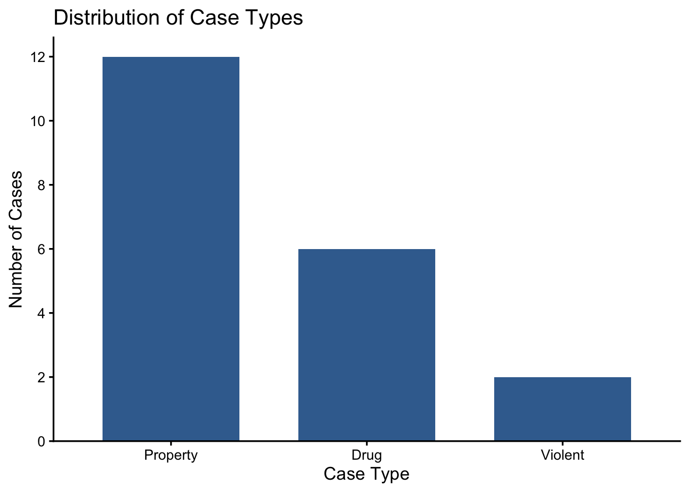

4 Visualizing Categorical Data with Bar Charts
4.1 The Question
NoteCentral question
How can we use a bar chart to communicate the distribution of a categorical variable?
Frequency tables organize categorical data and make exact counts and proportions available. A visualization presents the same information in a form that can make comparisons easier to see. When we want to compare how observations are distributed across categories, a bar chart is often the clearest place to begin.
A useful bar chart does more than replace numbers with shapes. It directs attention to the pattern that matters, represents the values accurately, and helps an audience understand the evidence without requiring them to study a detailed table.
4.2 What You Will Learn
After completing this chapter, you should be able to:
- Explain when a bar chart is appropriate.
- Construct a bar chart using frequencies or proportions.
- Identify the categories and values represented by the two axes.
- Apply basic design principles that make a bar chart accurate and readable.
- Interpret a bar chart in relation to a criminal justice question.
4.3 From a Frequency Table to a Visualization
Suppose we have information about 20 recently filed court cases. For each case, the dataset records the type of case and its disposition.
| Case ID | Case Type | Case Disposition |
|---|---|---|
| 1 | Property | Plea Agreement |
| 2 | Property | Dismissed |
| 3 | Drug | Plea Agreement |
| 4 | Property | Plea Agreement |
| 5 | Violent | Convicted at Trial |
| 6 | Drug | Plea Agreement |
| 7 | Property | Pending |
| 8 | Property | Plea Agreement |
| 9 | Drug | Dismissed |
| 10 | Property | Plea Agreement |
| 11 | Property | Plea Agreement |
| 12 | Drug | Plea Agreement |
| 13 | Property | Pending |
| 14 | Property | Plea Agreement |
| 15 | Violent | Convicted at Trial |
| 16 | Drug | Plea Agreement |
| 17 | Property | Plea Agreement |
| 18 | Property | Dismissed |
| 19 | Drug | Plea Agreement |
| 20 | Property | Plea Agreement |
Consider the research question:
What is the most common type of case among these recently filed cases?
We can begin with a frequency and proportion table.
| Case type | Frequency (\(f\)) | Proportion (\(p\)) | Percentage |
|---|---|---|---|
| Property | 12 | 0.60 | 60% |
| Drug | 6 | 0.30 | 30% |
| Violent | 2 | 0.10 | 10% |
| Total | 20 | 1.00 | 100% |
The table provides exact values. Property cases are the most common and account for 60% of the 20 cases. Drug cases account for 30% and violent cases account for 10%.
4.4 Constructing a Bar Chart
In a bar chart:
- each bar represents a category;
- the horizontal axis identifies the categories;
- the vertical axis reports a frequency, proportion, or percentage; and
- the height of each bar represents the value for that category.
The chart communicates the same pattern as the table, but the differences are immediately visible. The property bar is twice the height of the drug bar and six times the height of the violent bar.
ImportantA chart complements a table
A table is usually better when the audience needs exact values. A chart is often better when the audience needs to see the pattern quickly. A report may use both, but each should serve a clear purpose.
4.5 Frequencies, Proportions, or Percentages?
A bar chart can display any of these three summaries:
- Frequency: the number of observations in each category;
- Proportion: the share of observations in each category, ranging from 0 to 1; or
- Percentage: the share of observations in each category, ranging from 0% to 100%.
For a single group, all three produce the same relative bar heights. The vertical-axis labels and interpretation change, but the pattern does not.
Frequencies are intuitive when the total number of observations matters. Proportions or percentages are generally more useful when comparing groups of different sizes. For example, if two courts process different numbers of cases, comparing the percentage of cases in each category is more informative than comparing raw counts alone.
TipMatch the chart to the question
Use counts when the question concerns how many cases occurred. Use proportions or percentages when the question concerns how cases are distributed or when groups have different totals.
4.6 Designing an Accurate Bar Chart
4.6.1 Begin the Value Axis at Zero
The length of a bar represents its value. If the value axis begins above zero, small differences can appear much larger than they really are. Beginning at zero preserves the visual relationship between bar lengths.
4.6.2 Keep the Bars Separate
Bar charts describe distinct categories, so the bars should have spaces between them. Later, when we use histograms to display quantitative variables, the bars will touch because they represent adjacent numerical intervals.
4.6.3 Use a Meaningful Category Order
Ordinal categories should remain in their natural order. Nominal categories can be arranged logically, alphabetically, or from most to least common. The order should make the comparison easier to understand rather than manipulate the audience.
4.6.4 Label the Chart Clearly
A reader should be able to determine:
- what the chart is about;
- what each category represents;
- whether the values are counts, proportions, or percentages; and
- which population, sample, place, or time period is being described.
4.6.5 Avoid Unnecessary Decoration
Three-dimensional bars, excessive colors, backgrounds, and decorative images can distract from the comparison. A simple chart with readable labels is usually more effective.
4.7 Interpreting a Bar Chart
A good interpretation should connect the visual pattern to the substantive question. It should identify the important comparison and report enough numerical information to make the statement precise.
For the court-case example, an appropriate interpretation is:
Property cases were the most common type among the 20 recently filed cases. Twelve cases, or 60%, involved property offenses, compared with six drug cases and two violent cases.
4.8 Check Your Understanding
Suppose Court A processed 40 drug cases out of 100 total cases, while Court B processed 60 drug cases out of 300 total cases.
- Which court processed more drug cases?
- In which court did drug cases constitute a larger share of the caseload?
- Would frequencies or percentages provide the better comparison of the courts’ case distributions?
NoteCheck your answers
- Court B processed more drug cases: 60 compared with 40.
- Drug cases constituted a larger share in Court A: \(40/100 = 40\%\), compared with \(60/300 = 20\%\) in Court B.
- Percentages provide the better comparison of the distributions because the courts processed different total numbers of cases. Counts remain relevant if the question concerns workload rather than composition.
4.9 Test Your Knowledge: Juvenile Detention Center Staff
4.9.1 The Scenario
You work as a junior data analyst for the Lokkemup County Juvenile Detention Center. The center is preparing a report about its staff, and your supervisor asks for clear visualizations showing how employees are distributed across departments, shifts, and training-completion categories.
You receive the following data for 20 staff members.
| ID | Department | Shift Type | Completed Trainings |
|---|---|---|---|
| 1 | Security | Day | Yes |
| 2 | Security | Day | No |
| 3 | Security | Night | Yes |
| 4 | Security | Night | No |
| 5 | Security | Day | Yes |
| 6 | Security | Day | Yes |
| 7 | Programming | Night | No |
| 8 | Programming | Night | Yes |
| 9 | Programming | Day | No |
| 10 | Programming | Day | Yes |
| 11 | Programming | Night | Yes |
| 12 | Programming | Day | Yes |
| 13 | Administration | Day | No |
| 14 | Administration | Night | Yes |
| 15 | Administration | Night | No |
| 16 | Administration | Day | Yes |
| 17 | Administration | Day | Yes |
| 18 | Administration | Night | No |
| 19 | Administration | Night | Yes |
| 20 | Administration | Day | Yes |
The variables are defined as follows:
- Department: Security, Programming, or Administration.
- Shift Type: Day or Night.
- Completed Trainings: Whether the employee has completed all required training webinars, recorded as yes or no.
4.9.2 Part 1: Identify the Variables
For each variable, identify its level of measurement and briefly explain your reasoning.
| Variable | Level of measurement | Why? |
|---|---|---|
| Department | ||
| Shift Type | ||
| Completed Trainings |
4.9.3 Part 2: Construct Frequency Tables
For each variable, construct a table containing its categories, frequencies, proportions, and percentages.
| Category | \(f\) | \(p\) | Percentage |
|---|---|---|---|
| Total |
ImportantWhy there is no cumulative column
All three variables are nominal. Their categories do not have an inherent lowest-to-highest order, so cumulative frequencies and proportions would depend on an arbitrary ordering and would not have a useful interpretation.
4.9.4 Part 3: Create the Bar Charts
Create one bar chart for each variable. You may display frequencies or proportions, but make the choice clear on the vertical-axis label.
Each chart should include:
- a descriptive title;
- clearly labeled axes;
- one separate bar for each category;
- a value axis that begins at zero; and
- an ordering that makes the categories easy to compare.
4.9.5 Part 4: Interpret and Evaluate
Answer the following questions:
- What is the most common category for each variable?
- What is the least common category for each variable? If there is a tie, state that clearly.
- Describe the most important pattern shown by each chart.
- Which chart would be most useful to the center’s administrators? Explain your choice.
- What conclusions cannot be drawn from these 20 staff records?
NoteReview the levels of measurement and frequency tables
All three variables are nominal because their values identify categories without an inherent order.
Department
| Department | \(f\) | \(p\) | Percentage |
|---|---|---|---|
| Security | 6 | 0.30 | 30% |
| Programming | 6 | 0.30 | 30% |
| Administration | 8 | 0.40 | 40% |
| Total | 20 | 1.00 | 100% |
Shift Type
| Shift | \(f\) | \(p\) | Percentage |
|---|---|---|---|
| Day | 11 | 0.55 | 55% |
| Night | 9 | 0.45 | 45% |
| Total | 20 | 1.00 | 100% |
Completed Trainings
| Completed | \(f\) | \(p\) | Percentage |
|---|---|---|---|
| Yes | 13 | 0.65 | 65% |
| No | 7 | 0.35 | 35% |
| Total | 20 | 1.00 | 100% |
NoteReview the central patterns
- Department: Administration is the most common department, with 8 employees or 40%. Security and Programming are tied as the least common, with 6 employees or 30% each.
- Shift Type: Day shift is more common, with 11 employees or 55%, although the day and night groups are fairly similar in size.
- Completed Trainings: A majority of employees have completed the required trainings. Thirteen employees, or 65%, have completed them, compared with 7 employees, or 35%, who have not.
4.10 Project Connection: Visualize a Categorical Variable
Select one categorical variable from your semester investigation.
- Create a frequency table containing counts, proportions, and percentages.
- Construct a bar chart using either frequencies or percentages.
- Give the chart a title that identifies the variable, group, place, or time period being described.
- Write two or three sentences interpreting the most important pattern.
- Identify one conclusion that the chart does not support.
4.11 Chapter Summary
- Bar charts display the distribution of categorical variables.
- Each bar represents a category, and its height represents a frequency, proportion, or percentage.
- Frequencies emphasize the number of cases, while proportions and percentages make it easier to compare groups of different sizes.
- The value axis should begin at zero because bar length encodes magnitude.
- Bars should remain separate because they represent distinct categories.
- Clear titles, labels, category ordering, and simple design help an audience interpret the chart accurately.
- An interpretation should describe the observed pattern without generalizing beyond the available data.
4.12 Key Terms
- Bar chart: A graph that uses separated bars to display the frequency, proportion, or percentage in each category.
- Category axis: The axis identifying the categories represented by the bars.
- Frequency bar chart: A bar chart in which bar heights represent counts.
- Percentage bar chart: A bar chart in which bar heights represent percentages.
- Proportion bar chart: A bar chart in which bar heights represent proportions.
- Value axis: The axis showing the numerical values represented by bar height.